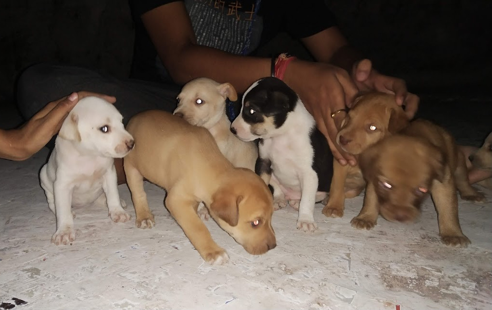
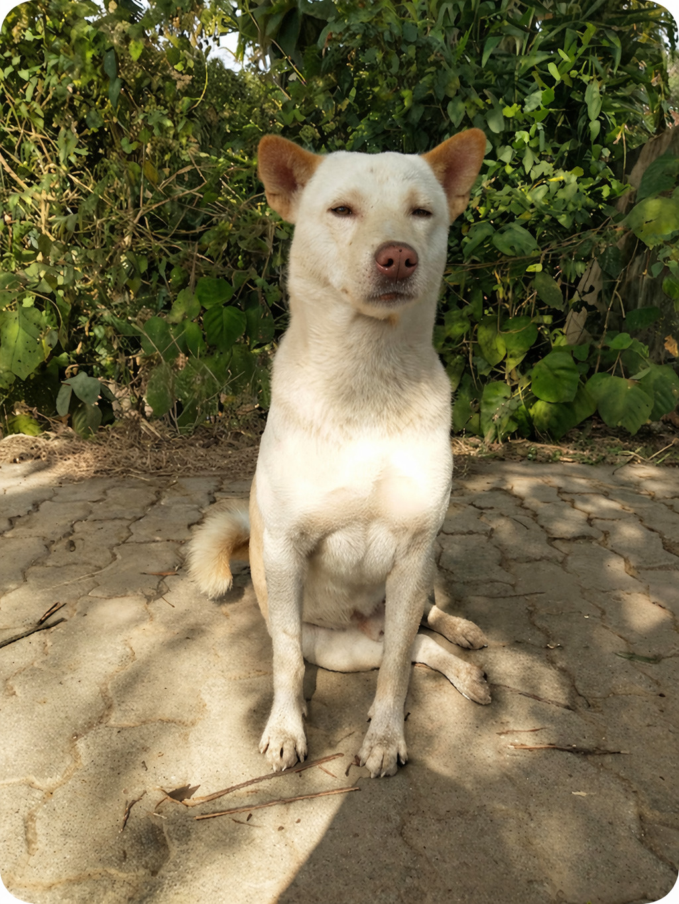

About Us
We are a passionate team dedicated to rescuing animals, spreading awareness, and creating a better and more compassionate world.

OUR STORY !!!
WE FOR A CAUSE FOUNDATION (WFC) is a NGO started in 2019 by a group of friends and young volunteers who are now change makers. Coco was the inspiration behind starting this NGO, he was abandoned and found by us in August 2019. We tried contacting several animal help groups, but no one showed up. We decided to act ourselves and succeeded in helping Coco and saving his life. He will always be our First Rescue of WFC. Later, we found many animals in need and decided to register this NGO to work on a larger scale.
From a family of 3 to 50 now, we work for the well-being of animals suffering on the streets. As the name suggests, "WE" means no one can bring change alone. We are constantly working towards positive change in the Environment, Society, and lives of animals. Our logo reflects our focus on Environment, Animal Welfare, and social issues.
WHAT WE DO ?
Strays face harsh lives with no shelter, food, or care. We aim to bring peace and happiness to these voiceless souls by encouraging society to join hands and support them.
We also work on women empowerment, child education, awareness campaigns, and transgender empowerment. We organize self-defense sessions for women in high-risk areas to ensure safety and equality for all.


WHY WHAT WE DO MATTERS ?
Driven by making an impact and inspiring change, our movements expand understanding of contemporary issues and develop campaigns pushing for positive solutions.
- Since 2020, we saved 800+ animals in distress and continue to save more. We also fed 800 animals during lockdown.
- 150+ families were provided food during the lockdown, with ongoing support in the future.
- We focus on child education, transgender awareness, and women empowerment in remote and tribal areas with 9 successful projects under all initiatives.